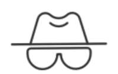

ETTERRETNING
Innhenting, analyse og vurdering av informasjon.
Direktoratet har gjennomført en innledende vurdering av aktuelle kandidater.
Din profil er funnet egnet for videre evaluering.
SE INNKALLING →Direktoratet for Sikkerhet og Spesialoperasjoner (DSS) er et nasjonalt fagorgan med ansvar for planlegging, koordinering og gjennomføring av særskilte operative oppgaver.
DSS arbeider for å sikre Norges interesser gjennom målrettede og effektive operasjoner.
Innhenting, analyse og vurdering av informasjon.
Forebygging og håndtering av særskilte sikkerhetshendelser.
Oppdrag som stiller særlige krav til kompetanse/presisjon.
Et begrenset antall kandidater er valgt ut til årets opptaksprosess.
Kandidatene vil bli vurdert både individuelt og som del av en operativ enhet. Opptaket består av flere praktiske og teoretiske prøver.
Kandidatene vil gjennomføre et antall tester. Det nøyaktige antallet er av administrative hensyn ikke endelig fastsatt.
Kandidatene vil organiseres i operative enheter. Valg av lagkamerater kan få uforutsette konsekvenser.
Flere av prøvene gjennomføres med begrenset tid. I enkelte tilfeller er denne begrensningen helt vilkårlig.
Poeng fra de ulike testene legges sammen. Det foreligger foreløpig ingen dokumentasjon på at poengsystemet er rettferdig.
DSS / INTERN DOKUMENTASJON
DOKUMENT 04-2026
Kandidater til DSS vurderes på bakgrunn av en samlet egnethetsprofil. Det legges særlig vekt på kandidatens evne til å samarbeide, vurdere situasjoner og handle under begrenset tid.
Kandidaten bør kunne bidra konstruktivt i en gruppe og tilpasse egen arbeidsform etter situasjonen.
Det forventes at kandidaten kan formidle informasjon tydelig, lytte til andre og bidra til felles beslutninger.
Evnen til å sette gruppens mål foran egne prestasjoner vil bli tillagt vekt. Uenighet innad i enheten forventes løst uten unødvendig dramatikk.
Kandidaten forventes å kunne tolke tilgjengelig informasjon og oppfatte relevante endringer i omgivelsene.
Dette innebærer å skille vesentlige detaljer fra irrelevant informasjon og danne seg et helhetlig bilde av situasjonen.
Kandidaten må være forberedt på at informasjonsgrunnlaget kan være ufullstendig, misvisende eller i enkelte tilfeller fullstendig irrelevant.
Kandidaten bør kunne foreta velbegrunnede valg også når tiden er begrenset og utfallet ikke er gitt.
Det forventes at kandidaten vurderer tilgjengelige alternativer, prioriterer hensiktsmessig og står ved beslutningen som tas.
Etterpåklokskap inngår ikke i vurderingsgrunnlaget.
Handlekraft skal ikke forveksles med hastverk.
Kandidaten må kunne følge instrukser og behandle fortrolig informasjon med nødvendig aktsomhet.
Det forventes at tildelte oppgaver gjennomføres etter beste evne, og at kandidaten opptrer på en måte som skaper tillit innad i den operative enheten.
Eventuell skyldfordeling foretas først etter avsluttet oppdrag.
Brudd på direktoratets krav til diskresjon vil bli sett alvorlig på.
Kandidaten skal møte på angitt sted.
Avvik fra anbefalt oppmøtepunkt kan medføre at kandidaten må finne frem på egen hånd.
DSS // OPERATIV MELDING
KANDIDATSTATUS: INNKALT
OPPTAK 2026
Du er med dette innkalt til årets opptaksprøve ved Direktoratet for Sikkerhet og Spesialoperasjoner.
ANLEDNING
Pål André Holdahl
Direktoratet ber om at innkalte kandidater bekrefter hvorvidt de møter til opptaksprøven.

DSS // KANDIDATREGISTRERING
Kodenavn: